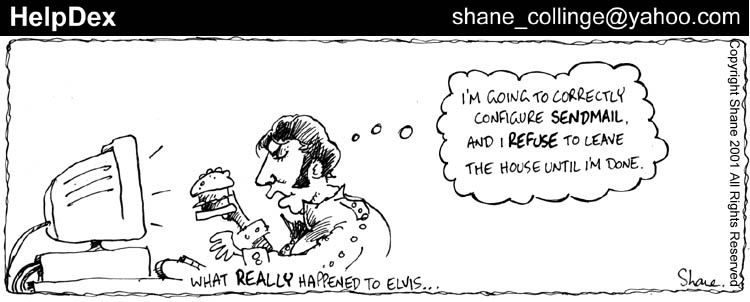
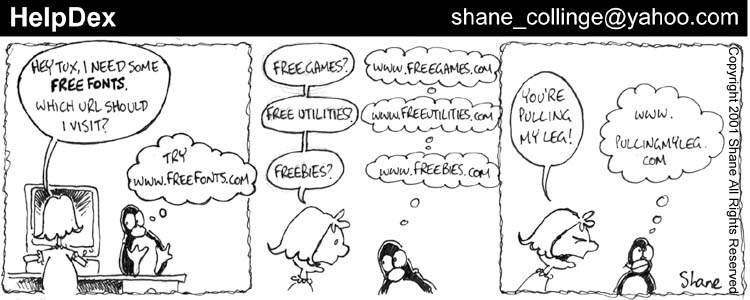
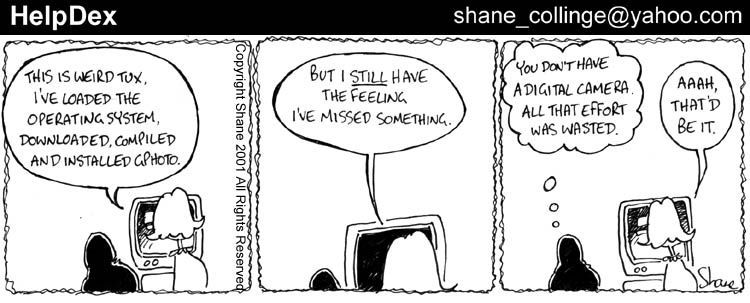
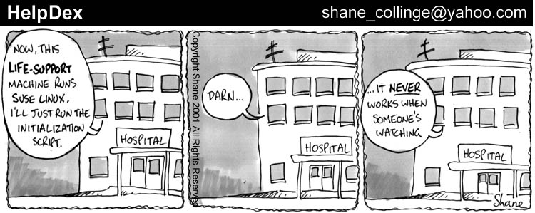
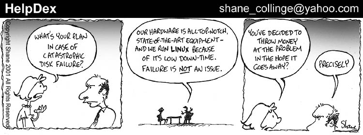
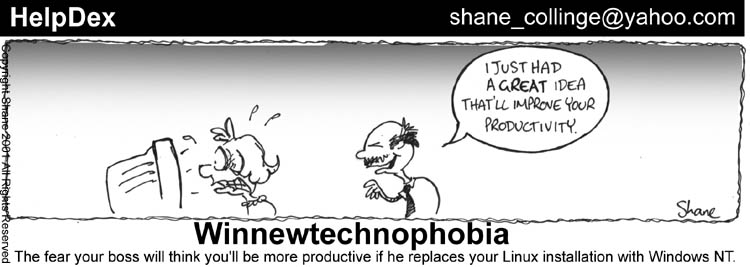

Linux Today is no longer carrying HelpDex due to on-line publishing budget cuts. I r-e-a-l-l-y thank Kevin and Paul from Linux Today for running me for so long and giving me the chance to get 250+ strips up there.
What does that mean for Carol and Tux? I have no idea. There's a little stockpile I have at home so I'll run a few days past on Linux Today then probably switch back to my homepage (mrbanana), though (to be completely honest) without funding I'm not sure how long I'll keep the energy for.
I'll miss doing it every day, it's a LOT of fun.
[Your Editor told Shane we'd like to continue publishing HelpDex if he is able to continue it. I also pointed out that we need only 4-6 panels a month to make a "complete" article, and we can even run with 1 or 2 if that's all he can manage. -Mike.]
I guess ideally I'd like to continue it exactly as it is now - I'm used to the format, the humour seems to have stabilised and people know where it is and what's going on.
In terms of doing impromptu stuff, I'm more than happy to do that, for both you and LT as both of you have been a HUGE help in getting HelpDex seen. And hopefully HelpDex has helped your publications. Just let me know if you ever need anything. Maybe this is a good time to pull Maximux out of the cupboard again, too!
[Funny, I was just thinking that. More Maximux!!Readers, send Shane your ideas for future HelpDex and Maximux cartoons. If he uses them, you'll see your name in print. -Mike.]